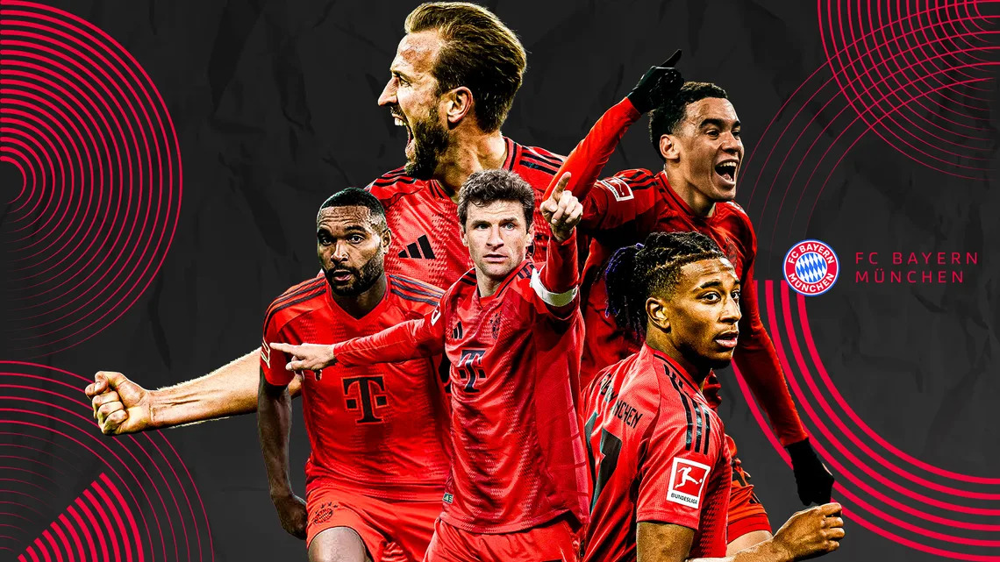

FC Bayern Munich is a German professional football club based in Munich, founded in 1900, that has become one of Europe's most successful clubs, known for its 33 national league titles and multiple European trophies, including six Champions League titles and two consecutive European Cups.
Bayern Munich has been home to some of the greatest players in football history. Three of the most legendary German footballers of all time who played for Bayern are Sepp Maier, Gerd Müller, and Franz Beckenbauer.
Home ground: The club plays its home games at the Allianz Arena, which it has called home since 2005.
My favorite player is Thomas Müller, who used to play with the team until the end of the 2024/25 season.
Watch this short Bayern Munich highlight video: